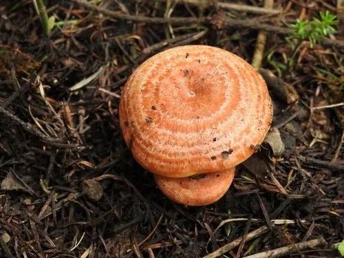

真菌 · 真菌界
松乳菇 Lactarius deliciosus

生长在松林下的橙红色乳菇，菌肉受伤后流出橘红色乳汁，常与松树形成共生关系，是云南等地常见的野生食用菌。
- 分类
- 门担子菌门纲伞菌纲目红菇目科红菇科属乳菇属
- 栖息环境
- 松林和针阔混交林的地面，与松树形成外生菌根
- 地理分布
- 欧洲、北美和东亚，中国云南、四川、湖南、湖北、福建等地有分布
- 保护级别
- 暂无评估（IUCN 未评估，中国未列入重点保护名录）
物种志
松乳菇是担子菌门红菇目的外生菌根真菌，子实体单生或群生。菌盖初期半球形，后平展并中央下凹，直径 4–12 cm，表面呈橙红色至胡萝卜红色，常有同心环纹，潮湿时略黏；菌肉橙黄色，质地脆，受伤后会流出橘红色的乳汁。菌褶密集，橙黄色，受伤后变绿；菌柄圆柱形，中空，表面有浅色凹窝；孢子印淡黄色。
松乳菇与松树形成外生菌根，多生于松林、针阔混交林的地面，夏秋季出菇，在中国云南、四川、湖南、湖北、福建等地都有分布。它的肉质脆嫩，带有松脂清香，是云南等地常见的野生食用菌，可炒食、炖汤或腌制；但必须经过充分加热，且不要与不明菌类混采，以免误食。新鲜松乳菇受伤后流出的橘红色乳汁是它最显著的特征，也是与近缘种区分的重要依据。
形态与习性
- 菌盖直径 4–12 cm，橙红色，常有同心环纹
- 菌肉受伤后流出橘红色乳汁
- 菌褶橙黄色，密集，受伤后变绿
- 菌柄圆柱形，中空，表面有浅色凹窝
- 孢子印淡黄色
- 采收期夏秋季，雨后松林中出菇
- 食用性可食，但必须充分加热后食用
趣味知识
- 松乳菇受伤后流出的橘红色乳汁，是它区别于其他蘑菇的显著特征。
- 它与松树形成外生菌根，离开松林很难找到。
- 在云南，松乳菇被称为“松菌”，是夏秋季节的野生美味。
- 野生菌一定要充分加热后再吃，不要生食或混食。